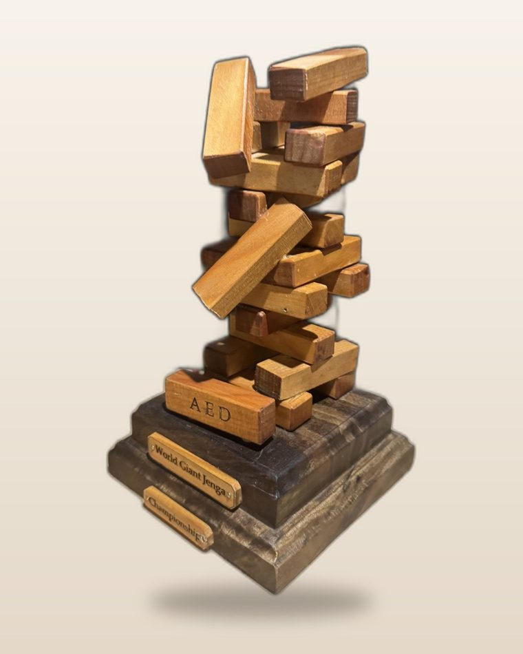
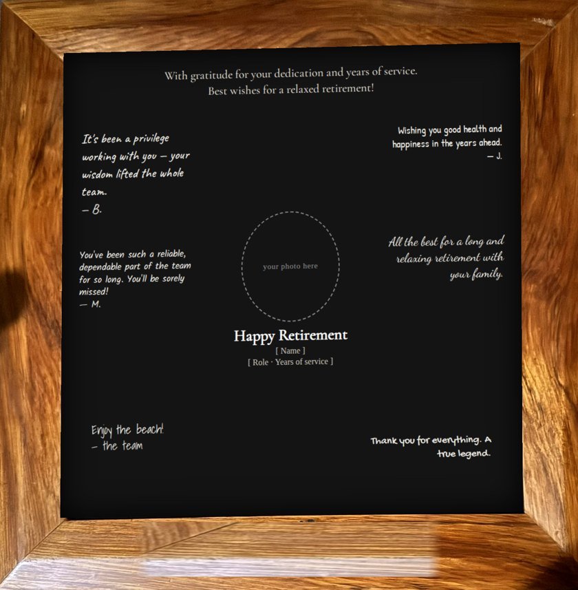

Commissions
Start yours
Every commission is created with you — designed around your idea, your story, or a material that matters. You don't need a finished design. Give me the bare bones and I'll help shape it. From a club trophy to a keepsake made from your own material — if you can picture it, we can make it.



How it works
Tell me your idea
A picture, a rough thought, or just a feeling and who it's for. That's enough to start.
We design it together
And when you can't quite picture it, I use AI tools to capture the essence of your idea — so we can see it before anything is made.
Choose the material
Your own — a timber you've kept, an heirloom — or one we choose together.
I make it
By hand, one of a kind: woodwork, engraving, or both. I'll keep you posted as it comes together.
Culturally significant work
Some pieces carry cultural significance — tā moko and Māori portraiture in particular. I take those on by commission only, created with and for the people they belong to.
Let's start
Let's make yours
If you've got a piece in mind — or just the beginnings of one — I'd love to hear it.
Start a commission